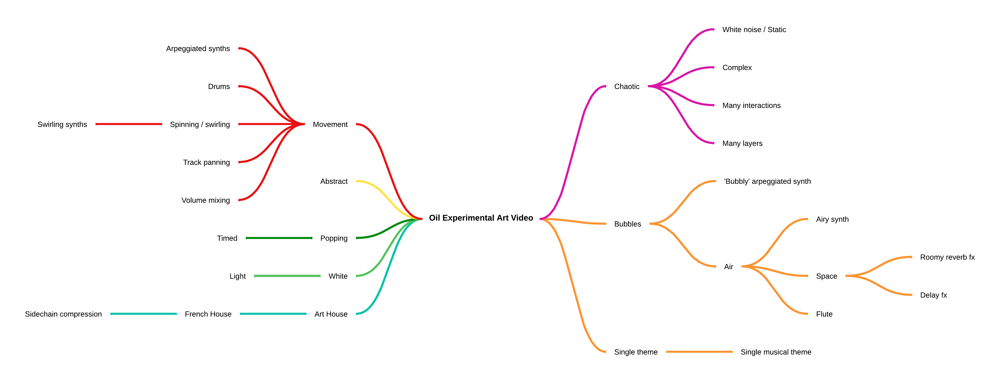

I've just completed a Diploma of Music Technology at the University of New England. My studies focused on music production with Ableton Live and using technology to develop innovative music performances. I also researched Order and Disorder in music production, and I discovered techniques to include chaotic sounds in my music. This is a selection of my recent work. I hope you enjoy!
Do you remember the sound of walking through a mall and into a record shop? In this track I mixed in a field recording of a walk through City Walk Arcade and vamped the intro to make it seem like the band was waiting for you to walk in.
I was aiming to produce a track that had a live band sound for the verses, and a very digital and processed sound for the vocal hook. The lyrics are a reflection on the relationship between uncertainty and risk.
City Walk Arcade. Albury. NSW. The site of the field recording.
This ambient house track features a chaotic intro and polyrhythms. The music video is made from selected scenes from Reefer Madness.
This piece was an experiment in music performance using live automation and effects in Ableton Live. The brief was to create a music performance to go with this art video, so I created a mind map of associations and developed this performance.
Mind map of associations with the video.
The brief was to create and record an arrangement to go with the provided vocal track, then re-record the vocals. The score is available here if you are interested in the arrangement.
A original song about a situationship. Piano and vocal performance.
A reading of the poem "A Dream" by Edgar Allan Poe with atmospheric music.
This track features a ukulele, and two 'textural' flute tracks. I also mixed in a field recording of Sandy Creek, and I think that in combination with the flutes it gives this track a 'pastoral' kind of feel.
“As far as the laws of mathematics refer to reality, they are not certain, and as far as they are certain, they do not refer to reality.”
The universe is, fundementally, an uncertain and chaotic place. Some people may think of Chaos as a state of disorder, but it is actually the science of surprises, of the nonlinear and the unpredictable.
Fractal patterns, which are an expression of this underlying chaotic principle, are self-similar patterns that contain infinite variation. They appear in nature in ways such as the arrangement of flower petals, and the spiral arms of galaxies. Fractal patterns also emerge in the creative arts. For example, genres in art and music are a way of grouping self-similar, yet unique works.
In theory, there should be nearly infinite chaotic potential for unique music experiences. Until the development of sheet music, all music was transmitted aurally and performers drew on their intuition to create unique (or chaotic) music experiences for their audiences. All music was public art, and performers were free to improvise and add their own interpretation to the melody or lyrics. Yet today, most music is privately owned and controlled by a few corporations.
I researched peoples listening habits, and I discovered that many people are choosing to listen to chaotic sounds such as white noise or ocean sounds instead of music. This made me wonder if some people were dissatisfied with the current trend of impossibly-perfect music production, and definitive recordings of songs. Perhaps people would appreciate music that is more chaotic in nature?
Edge of Chaos is a series of three works where I experimented with chaotic sounds and fractal patterns in music production. This project is a contribution to public art. It aims to spark a discussion about music as a public art form, and uniqueness in music performance and production. It is available on GitHub under a CC by 4.0 license to encourage others to re-mix these tracks and add to the chaos.
The tracks are inspired by the EDM, lo-fi, and video game music genres.
The drum kit in this track was created by recording white noise then processing it to create the different drum sounds. The introduction features many layered sounds that interact in chaotic ways. A swung arpeggiated pattern on the lead synth, and a vinyl crackle effect on the Rhodes both add to the disorder. The track ends with the chaotic sound of rain.
The track starts and ends with the sound of a compressor in a commercial refrigerator. The compressor has a very regular oscillation and I used this sound to represent Order. This track uses a few different techniques to represent Order in music. This includes a pulsing bass line that stays on the same note for the whole track, a precise 4/4 beat, and drum sounds with very regular waveforms.
In this track I tried to find the sweet-spot between order and disorder. It features a sweeping wind sound which was created by modulating white noise.
I bought a new tenor sax a few years ago and I wanted to know how it sounded.
The Challenge: Can I make this plastic saxophone sound good? You decide.